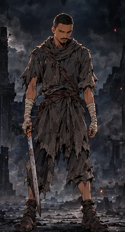
Guerreiro
Mestre do combate corpo a corpo. Muita força e resistência.
Dano físico · Força e Vitalidade
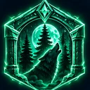
O jogoMissões reais, atributos, classes, chefes e sombras. Tudo o que fazes no jogo nasce do que fazes na vida.
Escreves as missões com as tuas palavras: «Ler 20 páginas», «Treino de 45 minutos», «Estudar inglês». Cada uma tem dificuldade (de D a S), atributos que treina e um prazo.
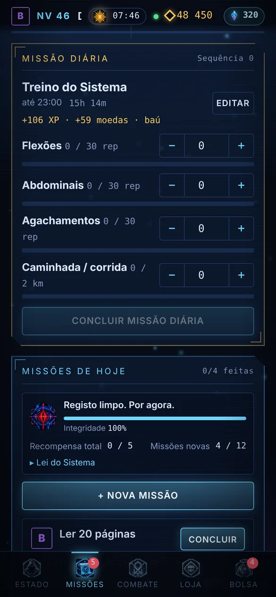
Cada nível dá 3 pontos para distribuíres. As missões também treinam os atributos que escolheste.
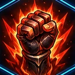
Dano físico.
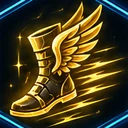
Crítico e esquiva.
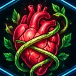
Vida e defesa.
Mana e magia.
Crítico e precisão.
Os ranks seguem o teu nível: E, D, C, B, A, S, SS, SSS e, no nível 100, Ω.
Todas começam assim, no nível 1. Cada classe segue um caminho só seu até ao nível 100.

Mestre do combate corpo a corpo. Muita força e resistência.
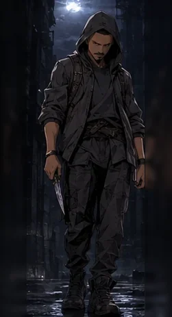
Rápido e letal. Críticos devastadores e venenos.
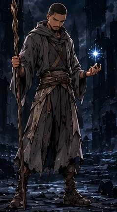
Domina a magia arcana. Dano mágico enorme, pouca defesa.
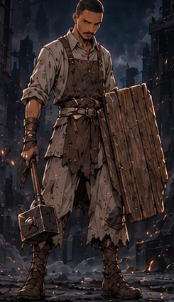
Uma muralha viva. Aguenta tudo e devolve o dano.
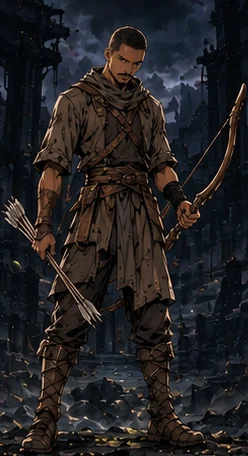
Precisão mortal à distância. Críticos e chuvas de flechas.
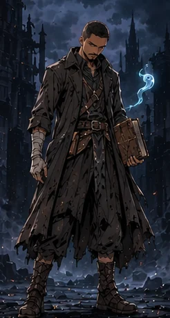
Chama espíritos para lutar ao seu lado e drena a vida dos inimigos.
Cada portão é um mundo com 10 chefes, do nível 1 ao 100. O último de cada portão é o rei, e luta em duas fases.
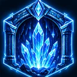
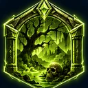
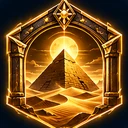
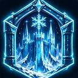
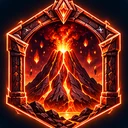
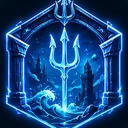
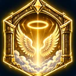
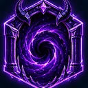
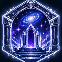
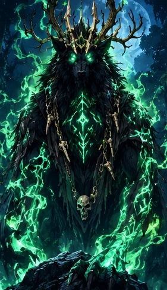
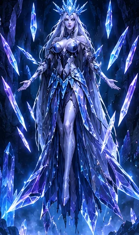
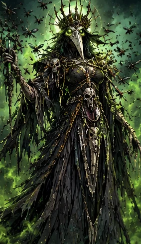
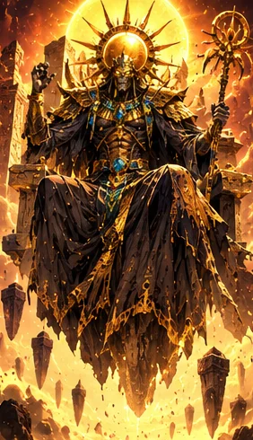
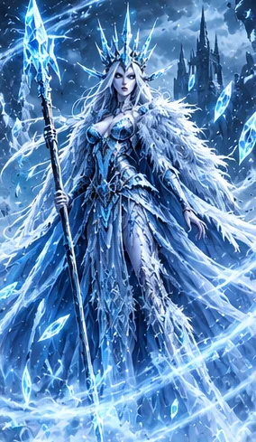
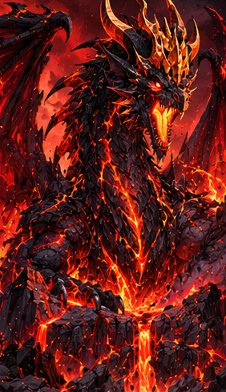
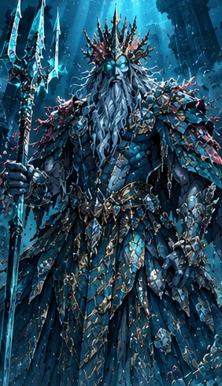
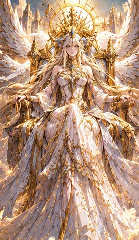
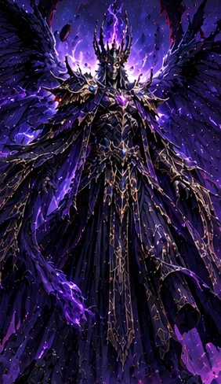
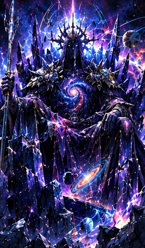
Atacar, usar habilidades, beber poções, defender. Os chefes atordoam, envenenam, criam escudos e ficam mais fortes na segunda fase.
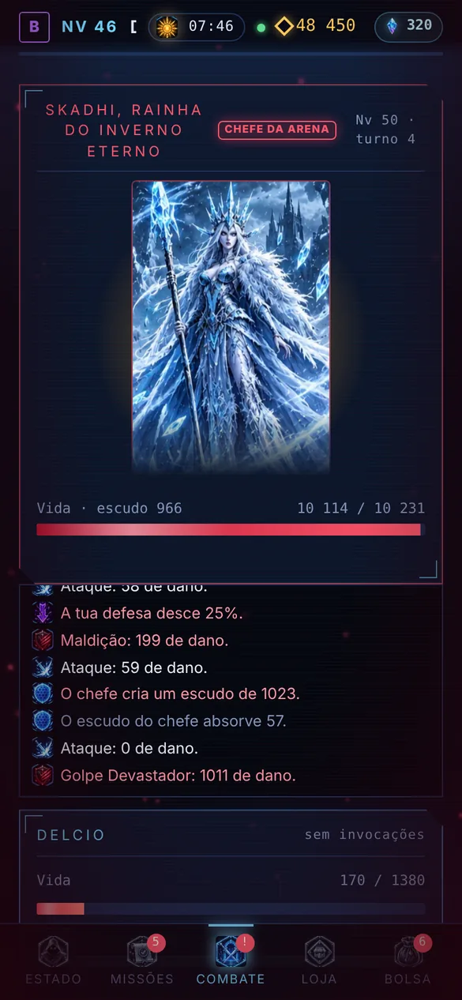
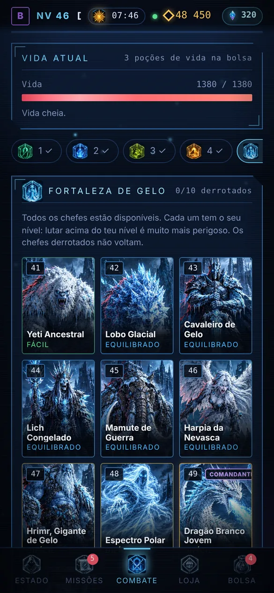
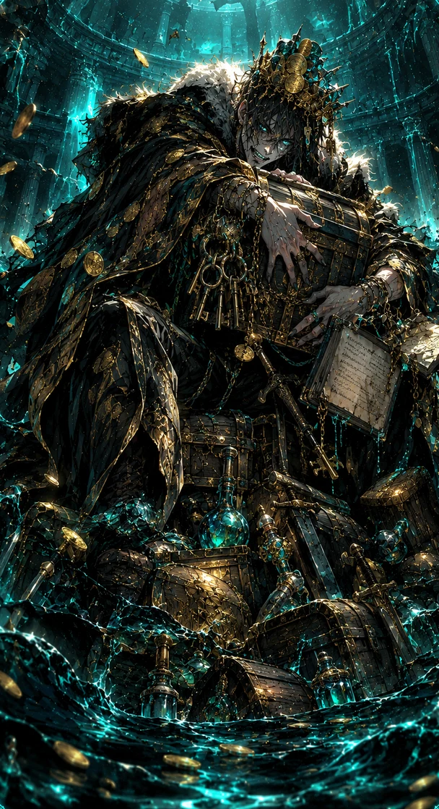
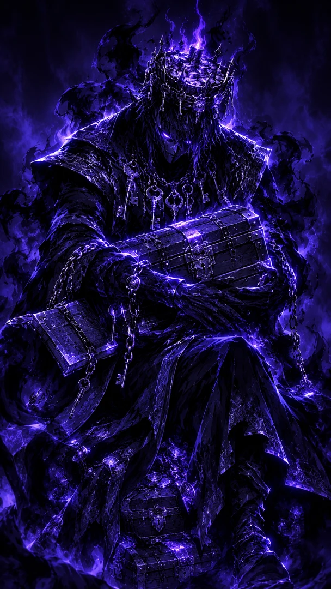
Depois da vitória, tens três tentativas para extrair a sombra do chefe. As sombras lutam ao teu lado, cada uma com o seu papel: atacante, guarda, arcano ou comandante.
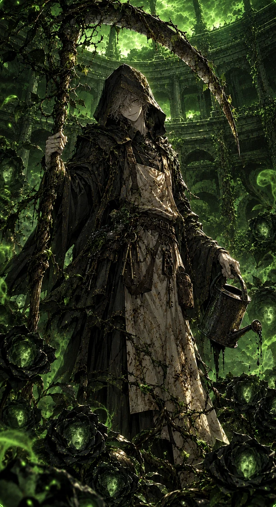
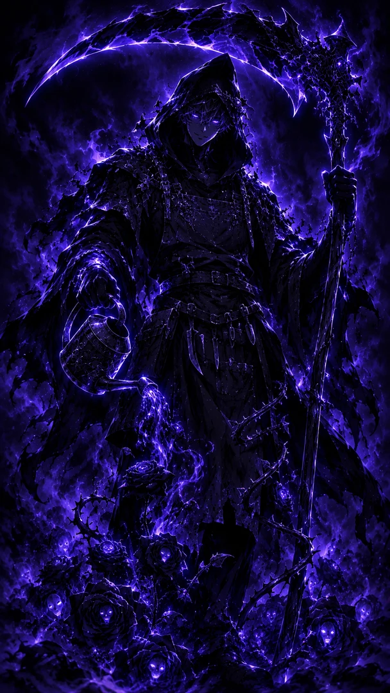
Quem vence os cem chefes dos portões e os dez Campeões do Coliseu descobre uma última arena que não aparece em nenhum mapa. O Sistema tem algo para te dizer. E não é o único.
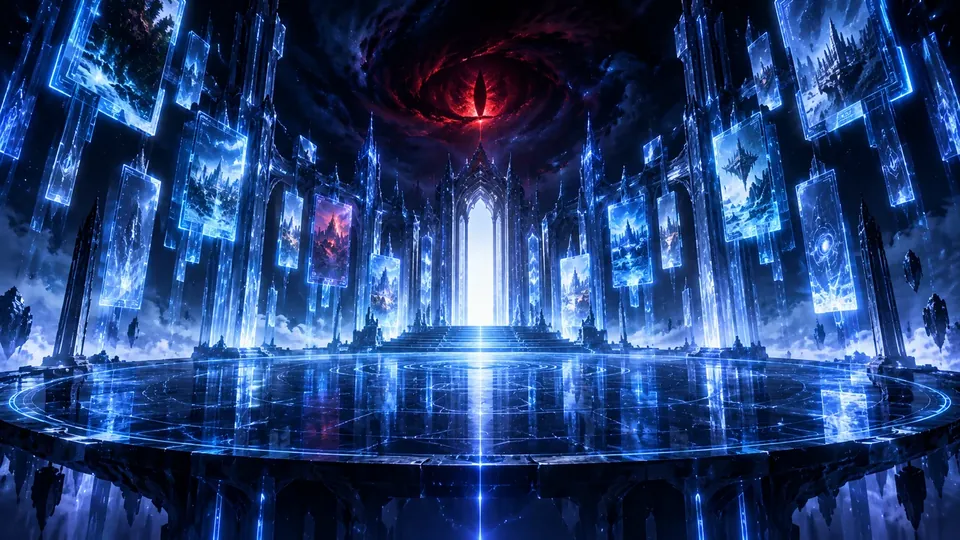
Descarrega o APK, compra o teu código de ativação e começa no nível 1.